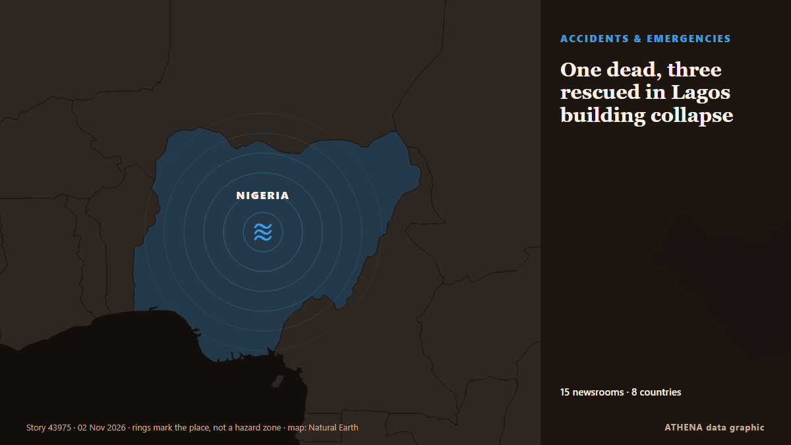

One dead, three rescued in Lagos building collapse

The Lagos State Emergency Management Agency (LASEMA) has confirmed one death and the rescue of three adult males following the collapse of a two-storey building under construction in Fadeyi, Lagos. from Vanguard
What changed 1 new report from 1 outlet in the last 24 hours.
See the sources ›Evidence: Limited
Reported independently by 15 outlets in 8 countries since 23 Oct, first by Vanguard; coverage is fading. ATHENA rates the risk elevated (4.3/10), driven mainly by the severity of the harm described and its geographic and sector reach. Confidence is 64% (moderate), with 15 independent outlets corroborating it and an average source reliability of 69%. Outlets by country: Nigeria (24), India (4), United Kingdom (3). Coverage: 23 Oct to 31 Oct, 185 hours.
Why it matters: Legal and policy changes alter rights, obligations and public services for the people they reach.
What changed: 1 new report in the 24 hours to 2 Nov.
AutomatedSelected, grouped and scored by ATHENA's published method from 15 independent outlets. The headline is the outlet's own; ATHENA's sentences follow fixed patterns - no generative AI writes them. How it works →
How to read this page
- What you are reading
- 15 outlets in 8 countries reported this event. The reports below are listed in the order they appeared; each headline opens the original article. ATHENA writes none of the reports.
- Our reading
- For the record — The reports describe a completed, domestic, commercial or personal matter. We list it so you can see who reported it and when. We are not tracking a risk of wider conflict here.
- How much evidence
- Limited Treat this page as an early report.
After repeats, off-topic items and stale reports are removed, 8 of the 37 listed reports are counted; 89% of the headlines match the event.
- What this does not mean
- ATHENA measures how an event is reported, not whether it is true. This is not a forecast, a judgement on who is right, or advice.
- What would change it
- Reports from other independent outlets showing a different development, or a firm confirmation or denial from an official source.
Reading R2 · refreshed with every update of this page. ATHENA has not yet published a track record for these readings; when it does, it will be linked here.
At a glance
Selected, scored and written by ATHENA's published methodology. No editor intervenes in individual events. How this is produced ›
| 23 Oct 07:25 UTC | 3 |
|---|---|
| 23 Oct 19:25 UTC | 0 |
| 24 Oct 07:25 UTC | 0 |
| 24 Oct 19:25 UTC | 0 |
| 25 Oct 07:25 UTC | 0 |
| 25 Oct 19:25 UTC | 0 |
| 26 Oct 07:25 UTC | 1 |
| 26 Oct 19:25 UTC | 6 |
| 27 Oct 07:25 UTC | 2 |
| 27 Oct 19:25 UTC | 6 |
| 28 Oct 07:25 UTC | 5 |
| 28 Oct 19:25 UTC | 7 |
| 29 Oct 07:25 UTC | 4 |
| 29 Oct 19:25 UTC | 5 |
| 30 Oct 07:25 UTC | 0 |
| 30 Oct 19:25 UTC | 1 |
| 31 Oct 07:25 UTC | 2 |
| 31 Oct 19:25 UTC | 0 |
| 01 Nov 07:25 UTC | 0 |
| 01 Nov 19:25 UTC | 1 |
| 28 Oct 16:42 UTC | 7.8 |
|---|---|
| 28 Oct 23:42 UTC | 6.7 |
| 29 Oct 23:55 UTC | 6.8 |
| 30 Oct 07:46 UTC | 4.5 |
| 02 Nov 05:11 UTC | 4.3 |
Why these numbers
Importance
How widely and how prominently the story is reported.
Risk
What the reports describe, scored for possible harm. It is not a forecast.
Confidence
How well independent outlets support the story.
Shown as 64% (calculated 85%): the evidence reading is Limited, so confidence is held at moderate.
The reporting — who reported it, and when
headline as published · opens the original- Vanguard · NigeriaOne dead, three rescued in Lagos building collapse
- Channels TV · NigeriaOne Dead, Three Rescued As Building Collapses In Lagos
- Daily Trust · NigeriaLagos: One dead, several feared trapped as building collapses
- NDTV · IndiaSeveral Workers Trapped In Bengal Coal Mine After Pulley System Glitch
- Punch · NigeriaFire guts residential building in Anambra
- Punch · NigeriaTraders seek Lagos intervention to prevent market fires
- Punch · NigeriaMotorists groan as flood triggers gridlock in Lagos community
- Express Tribune · PakistanOne worker killed, six injured as under-construction plaza roof collapses in Multan
- The Hindu · IndiaAll 14 workers trapped at Bengal coal mine rescued
- Punch · NigeriaPolice confirm three killed, inspector injured in Kebbi violence
- MyJoyOnline · GhanaOne dead, 14 injured in Akuse–Akosombo highway crash
- Punch · NigeriaLagos to host African Brands Congress on AI
- Punch · NigeriaKebbi violence leaves three dead, residents fleeing communities
- Stuff · New ZealandPerson found dead in car crashed into water in Marlborough
- Punch · NigeriaLagos driver fleeing police arrest kills okada rider, injures two
- Birmingham Mail · United KingdomDeals struck at collapsed Midland flooring firm saving 147 jobs
- The Hindu · India26 dogs rescued from suspected meat trade in Assam
- The Herald (Scotland) · United KingdomFormer C&A building on Sauchiehall Street could be turned into 'boutique' hotel
- Irish Examiner · IrelandHosanna in the highest bid: St Vincent's Church sale agreed at €400k
- The Hindu · IndiaChild rescued in Ranipet; four persons held
- Belfast Telegraph · United KingdomVincent Kompany released from hospital following collapse last week
- Punch · NigeriaLagos tackling 3.3m housing deficit, says Sanwo-Olu
- Punch · NigeriaLagos court denies wheelchair-bound suspect bail over murder
- Punch · NigeriaResidents groan as blackout hits Lagos communities
- Punch · NigeriaLagos man bags life jail for defiling 11-year-old girl
- Punch · NigeriaLagos warns motorists against ember months recklessness
- Punch · NigeriaHealth firm offers free screenings at Lagos fitness event
- Nile Post · UgandaKompany discharged from hospital following collapse
- Nile Post · UgandaNBRB Cites Structural Flaws in Bwerenga Church Collapse
- Punch · NigeriaHMOs deny endorsing Lagos private health plan
- News Agency of Nigeria · Nigeria2027: Lagos group mobilises UK diaspora for Tinubu
- Punch · NigeriaHow Our five-year-old daughter was kidnapped in Lagos — Family
- Punch · NigeriaLagos mobilises students to tackle pollution, flooding
- Punch · NigeriaSix Lagos students win prizes in Green Essay contest
- Punch · Nigeria2027: Lagos to train security agencies on election coverage
- Punch · NigeriaResidents groan over deplorable Lagos community road, seek repair
- Punch · NigeriaHuman trafficking: Police rescue three girls in Lagos